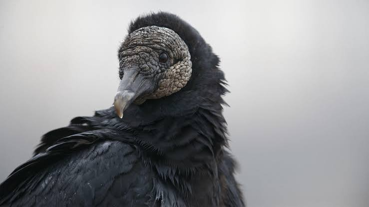

Vulture
Birds
A vulture is a scavenging bird of prey. The two types of vultures are the New World vultures, including the Californian and Andean condors, and the Old World vultures, including the birds that are seen scavenging on carcasses of dead animals on African plains.
Clutch size: Black vulture: 1 – 3
Phylum: Chordata
Lifespan: Black vulture: 10 years, King vulture: 30 years
Mass: Turkey vulture: 1.5 kg, Black vulture: 1.2 – 1.9 kg,
Wingspan: Black vulture: 1.3 – 1.7 m, Griffon vulture: 2.3 – 2.8 m, Red-headed vulture: 2 – 2.6 m
Length: Turkey vulture: 64 – 81 cm, Black vulture: 56 – 74 cm,
Vulture, any of 22 species of large carrion-eating birds that live predominantly in the tropics and subtropics. The seven species of New World vultures include condors, and the 15 Old World species include the lammergeier and griffons.
Although many members of the two groups appear similar, they are only distantly related.
All of the New World vultures and some of the Old World vultures have bare heads, a condition that prevents feathers from matting with blood when the birds reach inside carcasses.
Most vultures have a large pouch in the throat (crop) and can go for long periods without food—adaptations to a feast-or-famine scavenging lifestyle.
In some species the beak is exceptionally strong and heavy for tearing hide, muscle, and even bone. Eyesight in all vultures is well developed, as is the sense of smell in the turkey vulture.
Old World vultures have relatively strong feet, but New World Vultures have flat, weak feet that are poorly adapted for grasping.
Vultures are widely distributed, but they are absent from Australia and most oceanic islands. Most have broad food habits, consuming carrion, garbage, and even excrement, but rarely do they descend upon live animals.
A few occasionally take helpless prey such as lambs and tortoises or, in the case of Andean condors, newborn calves. Vultures may remain aloft for hours, soaring gracefully on long, broad wings.
When one bird descends to a dead or dying animal, others may be attracted from miles away. When feeding, vultures maintain a strict social order based on body size and strength of beak.
Smaller vultures must wait for the scraps left behind by the larger, dominant species. Even large vultures, however, give way to nearly all mammalian competitors, including jackals, hyenas, and coyotes.
Biology of Vulture
Feeding
Vultures are scavengers, meaning they eat dead animals. They rarely attack healthy animals, but may kill the wounded or sick. When a carcass has too thick a hide for its beak to open, it waits for a larger scavenger to eat first.
Vast numbers have been seen upon battlefields. They gorge themselves when prey is abundant, until their crops bulge, and sit, sleepy or half torpid, to digest their food.
These birds do not carry food to their young in their talons but disgorge it from their crops. The mountain-dwelling bearded vulture is the only vertebrate to specialize in eating bones, and does carry bones to the nest for the young, and it hunts some live prey.
Vultures are of great value as scavengers, especially in hot regions. Vulture stomach acid is exceptionally corrosive (pH=1.0), allowing them to safely digest putrid carcasses infected with botulinum toxin,
hog cholera bacteria, and anthrax bacteria that would be lethal to other scavengers and remove these bacteria from the environment.
New World vultures often vomit when threatened or approached. Contrary to some accounts, they do not "projectile vomit" on their attacker in defense, but to lighten their stomach load to ease take-off. The vomited meal residue may distract a predator, allowing the bird to escape.